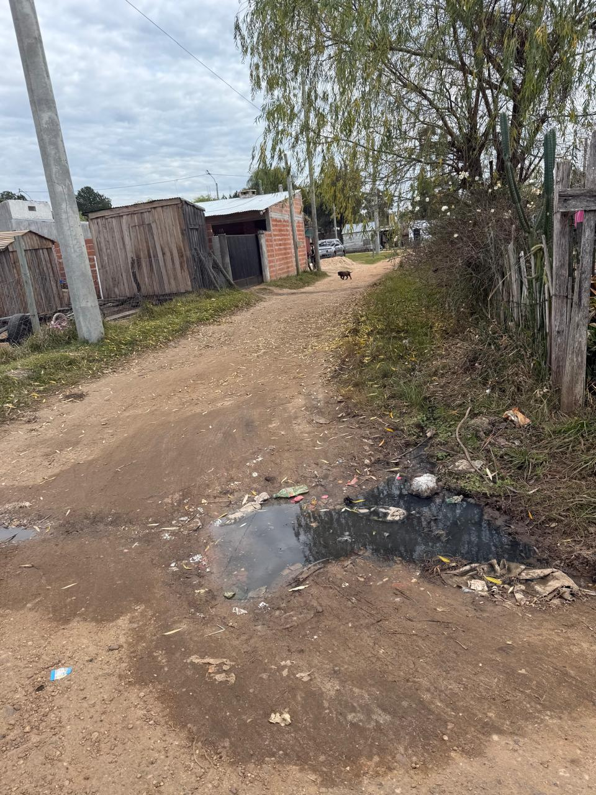
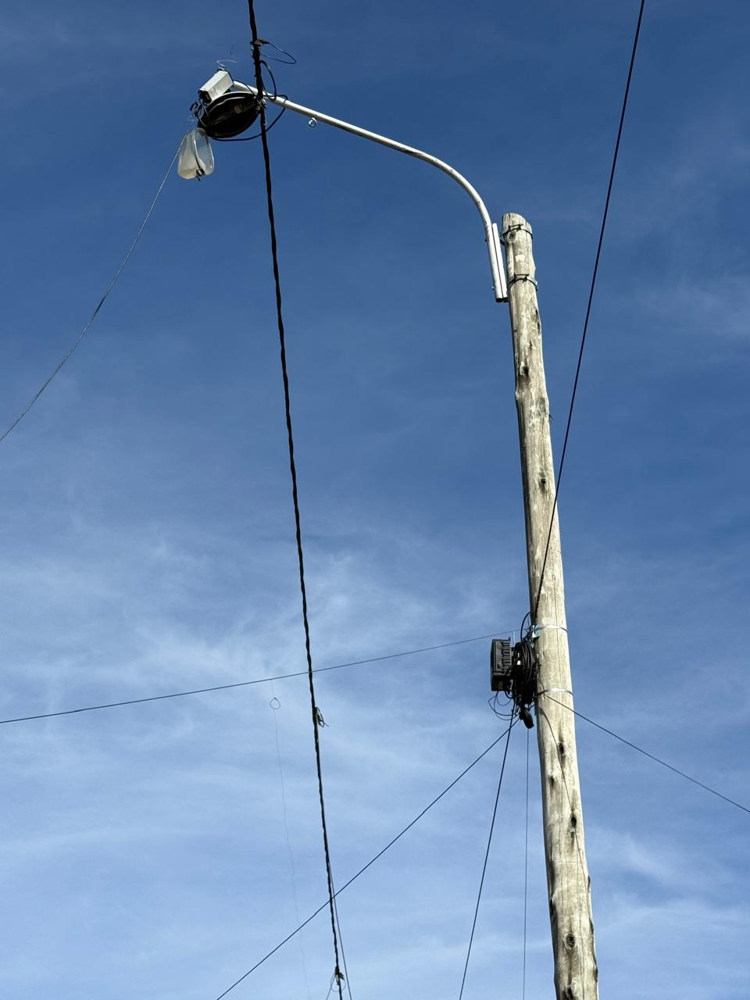
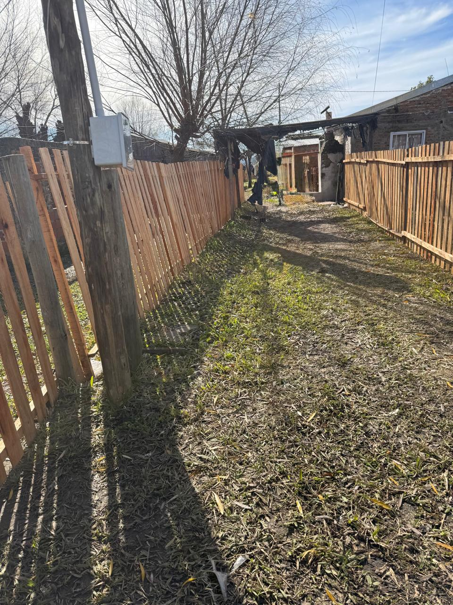
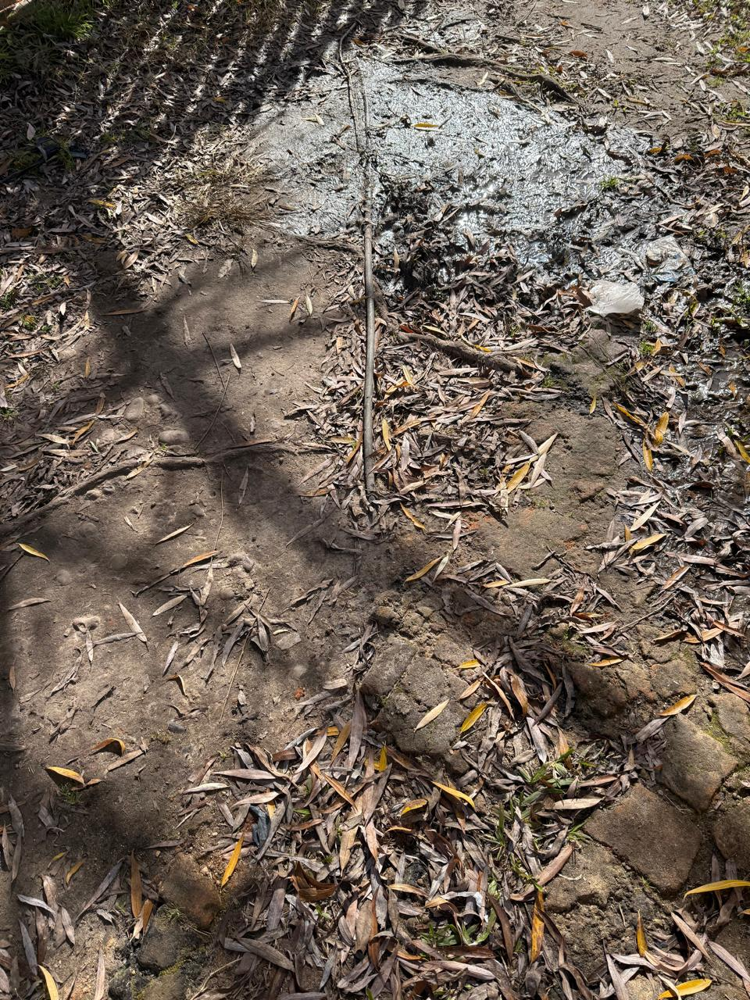
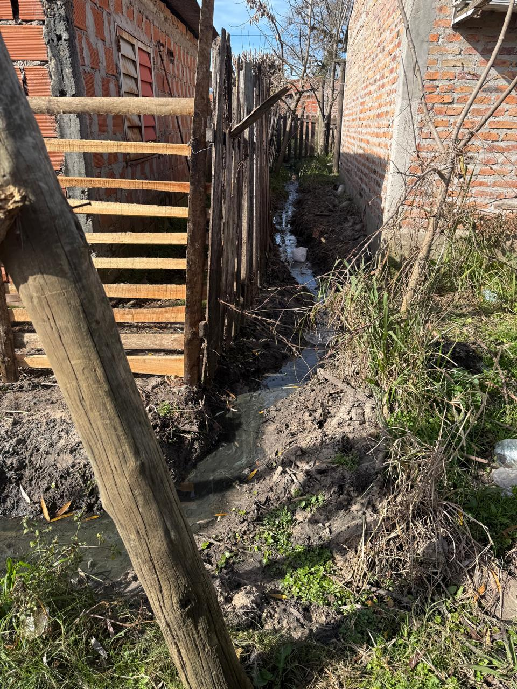

Relevamiento — Barrio Mendieta
Cooperativa Eléctrica y Otros Servicios de Concordia Ltda.
Relevamiento realizado entre el 13 y el 16 de julio de 2026 · Informe N° 11
Zona
Sur Oeste
El barrio Mendieta está ubicado en la zona suroeste de Concordia, cercano a Villa Adela. Se accede por Av. Frondizi, pasando el puente Yuquerí y desviando hacia la derecha por calle Capitán Rojas.
Los orígenes del barrio arrancan alrededor del año 1986, cuando se estableció en el lugar el Sr. Mendieta y su familia. Luego, los hijos fueron creciendo y formando sus propios grupos familiares, y así se fue extendiendo y agrandando el barrio.
Los terrenos eran privados y pertenecían a un empresario de la ciudad. A principios del año 2000, residían en el lugar 14 familias. En ese entonces, no contaban con el servicio de agua potable, por lo que el municipio abastecía a los vecinos una vez por semana y llenaban dos barriles. En relación a la electricidad, solo había un medidor comunitario, ubicado frente a la cancha de fútbol, lejos del conglomerado de viviendas, y tenían muy baja tensión.
A partir del 2010, en los caminos de acceso al barrio, se comenzaron a instalar varios aserraderos, lo que, al tener una fuente de trabajo cercana, hizo que muchas familias se vinieran a instalar en el lugar. Se fue extendiendo hacia el oeste y se comenzaron a delimitar algunas calles internas. En la actualidad residen cerca de 80 familias.
Posteriormente, el municipio regularizó el dominio de los terrenos, que dejaron de ser privados y pasaron a la órbita municipal. A partir de allí se fueron dando condiciones para poder brindar el servicio eléctrico bajo condiciones de seguridad para todos los vecinos.
La mayoría de los vecinos trabajan en aserraderos de la zona, aunque todos son empleos no registrados con pago semanal. El monto informado es entre $150.000 y $250.000 por semana.
Se dan casos de personas jubiladas y pensionadas con la mínima, trabajos informales en servicio doméstico (aproximadamente $200.000 semanales), y como ingreso estable en la mayoría de los hogares donde hay niños tienen la AUH.
En las calles con orientación este-oeste no hay tendido de red. La Cooperativa Eléctrica ocupa varios metros de cable hasta llegar a los domicilios. Se recomienda revisar periódicamente estas extensiones para que no pierdan altura y cumplan con las distancias de seguridad según AEA 90364 cap. 5.
| Estado general | Bueno — mejor barrio en normalización hasta el momento |
| Altura de línea | 11 metros verificados en calles norte-sur |
| Acometidas | Normalizadas con pilares reglamentarios |
| Sistema anti hurto | Implementado |
| Enganches parciales | Detectados en viviendas normalizadas para cargas de alto consumo |
| Calles este-oeste | Sin tendido de red — extensiones largas de cable |
| Recomendación | Mantener altura de 11m y revisar periódicamente extensiones este-oeste |
| Agua | A través de una bomba comunitaria. Históricamente no contaban con agua potable; el municipio abastecía una vez por semana. |
| Cloacas | Sin servicio cloacal. El camión municipal pasa a vaciar los pozos pero no con la periodicidad necesaria. Las aguas servidas corren por las veredas. |
| Gas | Sin red de gas natural. |
| Internet y comunicación | Empresa Megacable presente en el barrio. Los vecinos utilizan telefonía celular. |
| Recolección de residuos | 1 a 2 veces por semana. El resto de los días amontonan en los domicilios o queman. |
| Alumbrado público | Parcial — no están las luminarias en todos los sectores. Algunos vecinos se muestran disgustados porque en la factura tienen cargado el ítem correspondiente. |
| Transporte público | No llega al barrio. Los vecinos que no tienen motos o movilidad propia deben pagar Uber, con perjuicio económico por la lejanía. Hay un colectivo provincial solo para turno tarde escolar. |
| Estado de calles | Calles de tierra en su totalidad. Las que rodean la cancha de fútbol son más anchas; las internas son angostas, algunas sin salida y difíciles para móviles de altura. |
| Establecimiento educativo | Sin establecimientos escolares dentro del barrio. Los vecinos concurren a las escuelas más cercanas en Villa Adela: Escuela Secundaria N° 4 Damián P. Garat y Escuela N° 65 Guillermo Brown (primaria). También funciona la Escuela del Hogar Nueva Vida, solo para menores bajo guarda. |
| Transporte escolar | Parcial. Hay un colectivo de la provincia que lleva a los niños del turno tarde. Los del turno mañana deben ir caminando atravesando la ruta, situación muy peligrosa por la velocidad de los vehículos. |
| Establecimiento de salud | Sin salas de atención primaria en el barrio. Concurren al Centro de Salud Villa Adela (dificultad para conseguir turnos). Ante urgencias, a los hospitales Masvernat o Carrillo. |
En el barrio se distinguen dos sectores diferenciados en lo que refiere a los materiales de construcción de las viviendas. Lo que está en la entrada del barrio y rodeando la cancha de fútbol–parque infantil son viviendas de material, aunque económicas. Lo que está hacia el oeste cercano a la bomba, son de madera o parte en material, pero más precarias.
| Sector entrada/cancha | Material — viviendas económicas pero consolidadas |
| Sector oeste/bomba | Madera precaria — chapas asfálticas, sin mejoras |
| Situación dominial | Terrenos originalmente privados, regularizados por el municipio a órbita municipal |
| Riesgo hídrico | El desnivel del terreno arrastra aguas servidas hacia los lotes del límite norte en días de lluvia. El arrastre pasa por el terreno de la bomba de agua, con probable contaminación de napas. |




